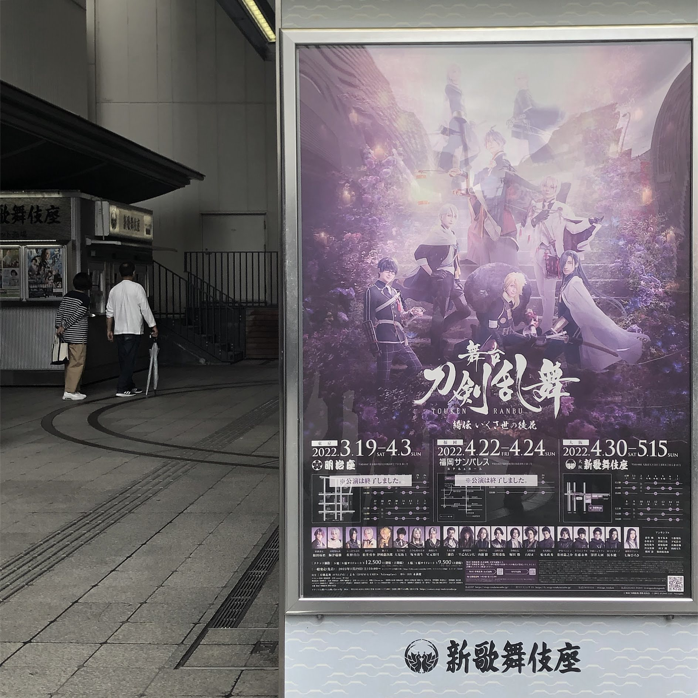

infomation
7月用の新しいアイコンイラストを作成しました。
今回のテーマは、私の大好きな作品、『アイドリッシュセブン』の和泉一織くんを描きました。クールな印象とは裏腹に、カワイイものが大好きな一織にウサギの着ぐるみを着させました。パーフェクト高校生、恐るべしですね。
works
weekly comment
今週も暑かったですね。私は暑すぎて軽い熱中症になりかけました。皆さんもこまめに水分補給を忘れないでください。あと、ハンカチも忘れないで下さいね。汗を吹いたり扇ぐものとして大切ですから。
event
かなり前ですが、舞台「刀剣乱舞」を観劇しました。好きな俳優さんが主演されていたのと、作品自体を長年に渡って応援していたので、感動ものでした。和田琢磨の力強い殺陣、梅津瑞樹のどこか山姥切国広を思わせるような、けれども確かに違う美しい殺陣、七海ひろきの刀剣乱舞の世界で舞う美しく、格好良く、はかない長刀。全てが素晴らしかったです。皆さんと語り合う日が来るまで。